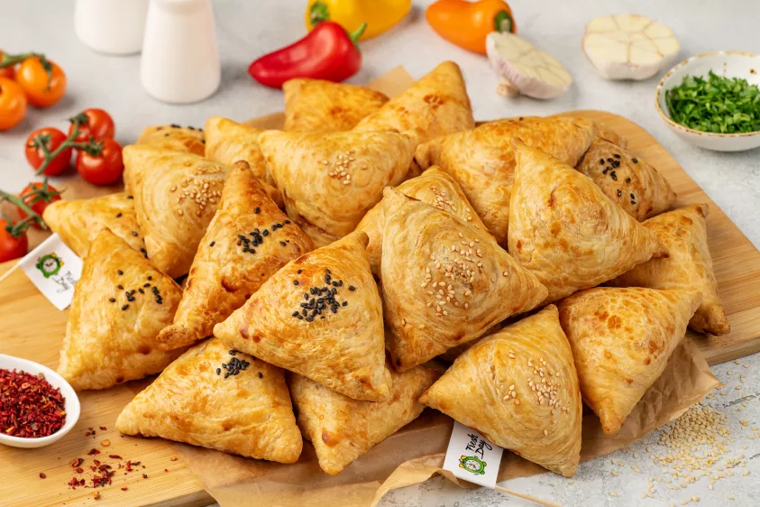

Kyrgyz Samsy
Samsy is a traditional baked pastry enjoyed throughout Kyrgyzstan and Central Asia. It is usually made with flaky dough wrapped around a savory filling of meat and onion. The pastries are commonly shaped into triangles or squares and baked until the outside becomes crisp and golden. Samsy can be served as a filling snack, lunch, or part of a family meal.
Ingredients:
- 1 pound puff pastry or homemade samsy dough
- 1 pound beef or lamb, finely diced
- 2 medium onions, finely chopped
- 1 teaspoon salt
- ½ teaspoon ground black pepper
- ½teaspoon ground cumin
- 1 egg, beaten
- Sesame seeds, optional
Steps:
- Preheat the oven to 400 ° Fahrenheit.
- Combine the diced meat and chopped onions in a large bowl.
- Add the salt, black pepper, and cumin, then mix the filling thoroughly.
- Divide the dough into equal portions and roll each portion into a thin circle or square.
- Place a spoonful of the meat filling in the center of each piece of dough.
- Fold the dough around the filling and firmly pinch the edges closed to form a triangle or square.
- Place the samsy seam-side down on a baking sheet.
- Brush the tops with beaten egg and sprinkle with sesame seeds if desired.
- Bake for about 25 to 35 minutes, or until the pastry is golden brown and the filling is fully cooked.
- Allow the samsy to cool for a few minutes before serving.